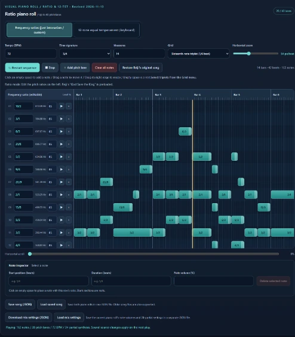
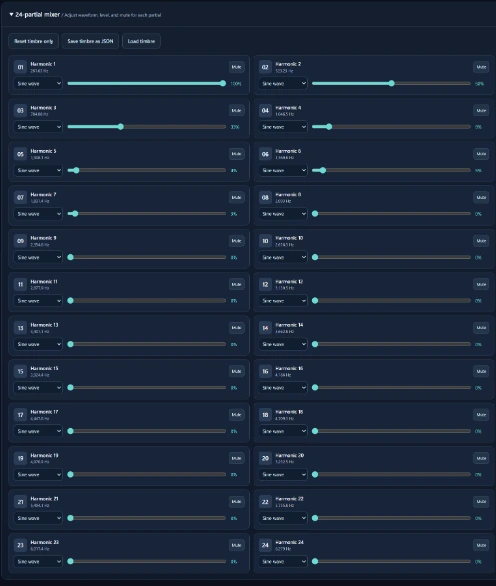
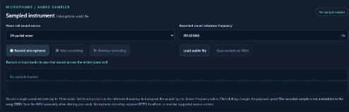
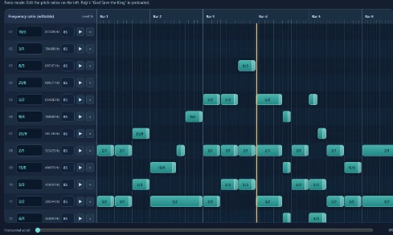
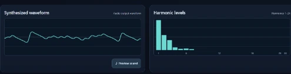
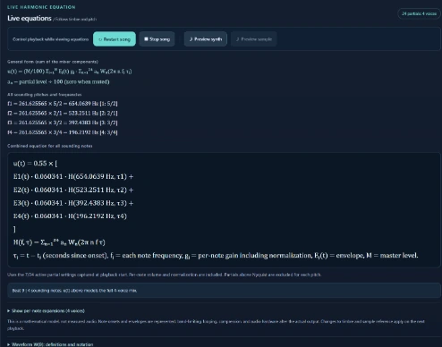
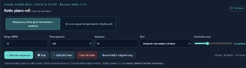
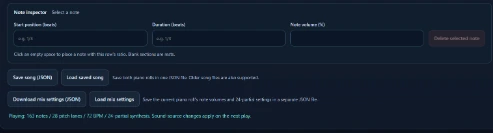

Apps and experimental tools / Sound × Mathematics
Harmonic Synth 24
An experiment in 24-partial synthesis, recorded sound, frequency ratios, and two kinds of piano roll.
How this app came about
Hello, I'm Reiji.
I often use mathematical formulas and programs to make sounds and explore the relationships between them.
I wondered if I could take part of what I usually do, narrow down the functions a little, and turn it into a web app with a user interface so I wouldn't have to keep typing in formulas by hand. I tried making one, found it surprisingly fun, and decided to share it.
At first, I implemented two functions:
- A mixer for creating timbres by choosing the waveform and volume of each of up to 24 harmonic components.
- A piano roll that uses that timbre as its sound source and lets you enter frequency ratios directly, so you can play music using combinations of pitches that cannot be expressed in 12-tone equal temperament alone, including just-intonation intervals with various prime limits.
Note: A prime limit specifies the largest prime number permitted in the numerator and denominator of a just-intonation frequency ratio. For example, 5-limit uses the prime factors 2, 3, and 5; 7-limit also permits 7; and 11-limit also permits 11.
After that, I added a familiar 12-tone equal-tempered piano roll and a sampling function so that sounds recorded with a microphone could be used as sound sources too. That means you can even play a tune using a fart sound.
I also thought it would be interesting to see directly how the formulas change when I adjust the sound settings in the UI, so I added a live equation display.
As I kept implementing ideas whenever they came to me, the app ended up with more functions than I had expected.
That has made the screen a little crowded, and there is still room to improve the UI. I plan to keep updating the app little by little.
If you're interested, please give it a try.

A workbench for experiments
Hear a timbre, change its components, enter notes, and listen again.
Different tuning systems can be tried with the same general sequence-editing workflow. The visual displays help connect audible changes with settings and formulas, without presenting them as calibrated acoustic measurements.
Screenshots show the English-language interface of a development version. On-screen labels may differ slightly as the application is updated.
01 / MAIN FUNCTIONS
What the application can do
Build a timbre from 24 harmonic components
Each component can be adjusted independently. Choose a waveform, change its level, or mute it; the synthesized sound and its mathematical description respond to the settings.
- Components 1–24, based on integer multiples of the reference frequency
- Sine, triangle, square, and sawtooth waveform choices
- Volume, mute controls, timbre presets, and JSON export/import

Use recorded audio instead of synthesis
Record a single note with a microphone or import an audio file. Set the pitch of the source recording, then use the recorded timbre for piano-roll playback. Pitch transposition is performed by changing playback speed.
Recordings can be saved separately as WAV files. Audio recordings are not embedded in the song JSON.

Two independent piano rolls
Ratio mode lets each pitch row use a freely entered positive ratio such as 3/2 or 23/16. The actual frequency is obtained by multiplying the reference frequency by that ratio, without rounding to 12-TET.
12-TET mode offers a conventional chromatic piano roll from C2 to B6, with an adjustable A4 reference. The two modes keep separate note data.
The included starting scores are Reiji’s versions of “God Save the King”: 14 bars in 3/4, with 163 note events in each mode.

Watch the waveform, levels, and live equation
The waveform panel provides a model of the synthesized tone while idle, and an audio-path waveform view during playback. The harmonic-level display shows the configured levels of the 24 components; it is not an FFT measurement of the speakers.
The equation panel updates when synthesis parameters or the selected/playback pitch changes. With sampled audio, it displays a playback-rate relationship instead of pretending that the recording was made by the 24-partial mixer.


02 / INSTRUCTIONS
User guide
Open the page and choose the playback source
Open the application in a modern browser. Under Piano-roll sound source, choose the 24-partial mixer or sampled audio. The master-volume control at the top applies to playback. Start with a low volume.
If using synthesis: design the sound
Choose a timbre preset or open the 24-partial mixer. Adjust each component’s waveform and volume, and use Mute to compare contributions. Click Preview sound to hear the result. The waveform, levels, and live equation reflect the selected settings.
If using a sample: record or import a sound
Use Record microphone, then Stop recording, or click Load audio file. Enter the recorded note’s actual frequency in the sample reference-frequency field. Select the sampled-audio source before playback; use Preview recording to check it.
Choose ratio or 12-TET mode
Use the two tabs above the score. In ratio mode, enter ratios on the left of the pitch rows, and set the reference frequency at the top (initially C = 261.625565 Hz). In 12-TET mode, choose pitches on the chromatic keyboard and use the A4 setting (initially 440 Hz).
The two scores are separate: changing modes does not convert an existing ratio score into a 12-TET score.
Enter and edit notes
Click an empty position on a row to add a note. Drag a note to change its starting position; drag its right edge to change its duration. An empty interval acts as a rest. Select a note to edit start, duration, and note volume precisely in the inspector. Choose the grid resolution, including triplets, and adjust tempo, meter, bar count, zoom, and horizontal scroll.

Play and inspect the result
Click Play sequence to hear the active score and Stop to end playback. The visual displays update with the selected note or a sounding note. The live equation represents one sound at a time; it is not a complete mathematical expansion of the entire polyphonic mix.
Clear, restore, save, and reopen
Clear all notes removes note events in the currently active piano-roll mode after a confirmation. Restore Reiji’s original song returns that mode to its included starting data. Use Save song (JSON) and Load saved song for both scores together, or the separate mixer/timbre JSON controls to keep settings.
Save sampled audio as WAV separately: the JSON records its settings, not the audio waveform.

Change the interface language
The application opens in Japanese by default. Use the 日本語 / English buttons in its header to switch languages. This does not change the notes or tuning data.
03 / MATHEMATICAL MODEL
What the equations represent
The numbers below describe how the application defines a target pitch or a synthesized waveform. They are useful for examining the relationship between user input and generated sound, rather than as measurements of the listening environment.
Frequency-ratio piano roll
The reference frequency multiplied by the user-entered ratio r.
12-tone equal temperament
m is the MIDI note number; 69 is the MIDI note number assigned to A4 (normally 440 Hz), so m − 69 gives the semitone distance from A4. fA4 is the A4 reference frequency.
24-partial synthesis model
t is time (seconds); n is the component number (1–24); an is its amplitude coefficient; Wn is the chosen waveform function; and f0 is the reference frequency (Hz) for the sounding pitch. Nonsinusoidal waveforms can introduce additional higher-frequency content.
Sample transposition
ftarget is the target frequency (Hz) of the note specified in the piano roll. fsample is the reference frequency (Hz) of the recorded or loaded sample. Their ratio sets the playback-speed multiplier: for example, 440 / 220 = 2 plays the sample twice as fast and one octave higher.
04 / DATA & LIMITATIONS
Notes on use and interpretation
- Visualization versus measurement: The harmonic bars display mixer settings; the equation describes the synthesis configuration. Neither is a calibrated loudspeaker or room measurement. The audio waveform shown during playback comes from the browser audio path, not a microphone measurement of the external speaker.
- Twenty-four components: The mixer controls 24 nominal partials. Triangle, square, and sawtooth choices can generate higher-order spectral components beyond those nominal frequencies.
- Save formats: The song JSON stores both piano-roll scores and relevant settings. WAV recordings must be saved and transferred separately; mixing information and timbre settings can also be exchanged as JSON.
- Pitch choices: Ratio mode uses the entered ratio directly. The application does not automatically determine which ratio is musically preferable in a given harmonic context.
- Browser and device differences: Audio behavior can vary with browser, hardware, and speaker system. This project is an interactive experiment rather than a physically verified sound-output standard.
| Application | Harmonic Synth 24 — Ratio / 12-TET Piano Roll |
|---|---|
| Technology | Browser application / Web Audio API / AI-assisted coding |
| Input systems | Frequency-ratio piano roll; 12-tone equal-tempered piano roll |
| Sound sources | 24-partial synthesized sound; microphone or imported audio sample |
| Demo score | “God Save the King” — Reiji’s entered ratio and 12-TET scores |
| Application URL | reiji-lab.org/tools/harmonic-synth-24/ |
Experimental ideas and musical input: Reiji. Documentation and implementation were prepared with family support and AI-assisted development. The descriptions refer to the version documented in November 2026.
Terms of Use
Harmonic Synth 24 may be freely used for experimentation and learning in acoustics and musical tuning. Sharing the official URL is welcome.
Harmonic Synth 24 is an application conceived and designed by Reiji.
Except where permitted by law, prior permission is required to reproduce or redistribute the program or published content, or to publish modified versions. Please contact us to request permission.
Presenting or introducing this application or its published content as your own creation is prohibited.
© 2026 Reiji / reiji-lab. All rights reserved.